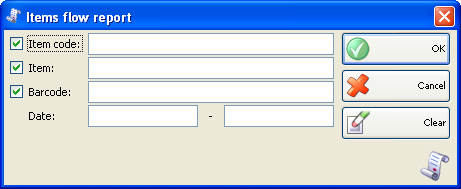
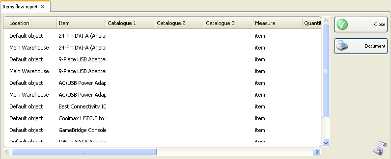

Raport evolutie articol
Raportul evolutie articole reprezinta o suma algebrica a operatiilor effectuate pentru articole. Cantitatea curenta si intrari / cheltuieli sunt definite in coloane separate pentru fiecare articol. �Puteti folosi acest raport pentru preluarea sumara a tuturor documentelor si operatiilor. Puteti urmarii cantitatea totala in vanzari, achizitii si alte operatii pentru un singur articol. Fiecare articol este afisat pe un rand separat in raport.
In prima fereastra a raportului puteti specifica criteriile de filtrare si campurile care se vor vizualiza. Numai liniile bifate vor fi vizualizate in raport.

Puteti alege o filtrare pentru fiecare camp prin apasarea tastei �F4.
Puteti limita raportul folosing un singur criteriu de filtrare. De exemplu puteti vizualiza fluenta (evolutia) unui anumit articol. Deasemenea puteti folosi mai multe criterii de filtrare in acelasi timp � de exemplu sa vizualizati evolutia unui anumit articol pentru o anumita perioada de timp.
Pentru stergerea tuturor filtrarilor specificate click pe butonul Clear. In acest caz raportul va afisa toate operatiile fara nici o restrictie.
Pentru a genera un raport dupa specificarea criteriilor click pe nutonul OK. Click pe butonul Cancel pentru inchiderea ferestrei.

�2006-2012 Microinvest, All rights reserved